Patch Managerの設定
仕様
構成・動作
Patch Groupは適用ベースラインの選択に使用します。Maintenance Windowのターゲット登録とベースラインへの関連付けをそれぞれ行います。
管理範囲
本書の設定表と画像は検証環境の例です。実作業では承認済みパラメータシートの値を使用します。
制約事項
スケジュール登録後は指定日時にタスクが起動します。運用開始前はウィンドウを無効化し、対象とパラメータの確認後に有効化します。
構築作業
1. Windows用パッチベースラインを決定する
- Systems Manager－「パッチマネージャー」－「パッチベースライン」を開きます。
- Windows Server用のAWS定義済みパッチベースラインについて、製品、分類、重要度、承認ルールが要件を満たすか確認します。
- AWS定義済みベースラインで要件を満たす場合は、そのベースラインを使用します。
- 承認日数、分類、重要度、拒否パッチなどを変更する必要がある場合だけ、Windows Server用カスタムパッチベースラインを作成します。
- 使用するベースラインID、ベースライン名、承認ルールおよび変更承認を記録します。
今回はAWS定義済みパッチベースラインの一覧まで確認しましたが、使用するWindowsベースラインとsample-windowの関連付けを直接示す照会結果は取得していません。この確認が終わるまで、関連付けを完了扱いにしません。
Windows用カスタムパッチベースラインを作成する場合
今回確認したAWS-DefaultPatchBaselineで要件を満たす場合、カスタムパッチベースラインの作成は不要です。承認待機日数、対象分類、重要度、Microsoft製アプリケーション、個別の承認／拒否KBなどを変更する場合だけ、次の手順で作成します。
Systems Managerコンソールで「パッチマネージャー」－「パッチベースライン」を開きます。
「パッチベースラインを作成する」を選択します。
名前と説明を入力し、オペレーティングシステムに
Windowsを選択します。「利用可能なセキュリティ更新プログラムのコンプライアンスステータス」を選択します。承認待機中のセキュリティ更新も非準拠として可視化する場合は
Non-Compliantを選択します。「オペレーティングシステムの承認ルール」で、製品、分類、重要度および自動承認条件を設定します。
- デフォルトベースライン相当の例：製品
All、分類CriticalUpdatesおよびSecurityUpdates、重要度CriticalおよびImportant、リリースまたは更新から7日後に自動承認 - Windows Server 2022だけへ限定する場合：製品で対応する
WindowsServer2022を選択 - 即時承認を避ける場合：自動承認日数を
0にせず、変更管理で定めた検証期間を設定
- デフォルトベースライン相当の例：製品
Microsoft製アプリケーションも対象にする要件がある場合だけ、「アプリケーションの承認ルール」を追加します。
個別に承認または拒否するKBがある場合だけ、「パッチの例外」へKB番号を入力し、拒否パッチのアクションを選択します。拒否リストは自動承認ルールおよび承認リストより優先されます。
必要に応じて管理用タグを付与し、「パッチベースラインを作成する」を選択します。
作成されたベースラインID、名前、Windows用承認ルールおよび例外設定を記録します。
作成しただけでは対象EC2に適用されないため、次節に従い、Patch Group値
sample-windowを作成したベースラインへ関連付けます。Scanテストで出力された
BaselineIdが作成したベースラインIDと一致することを確認してからInstallへ進みます。
「Windowsのデフォルトとして設定」は、Patch Groupを指定しないWindowsノードを含めて影響範囲が広がるため、組織全体の設計・変更承認がある場合だけ使用します。
Creating a custom patch baseline for Windows Server／Viewing AWS predefined patch baselines
2. Patch Groupをパッチベースラインへ関連付ける
今回のPatch Group値はsample-windowです。
Patch Groupタグには次の2つの役割があります。
- Maintenance Windowが実行対象EC2を選ぶためのタグ条件
- Patch Managerが、そのEC2へどのパッチベースラインを適用するか選ぶための関連付けキー
Maintenance Windowのターゲット登録だけでは、2つ目の「どのベースラインを使うか」は設定されません。そのため、Patch Group=sample-windowを使う構成では、sample-windowを使用するWindowsパッチベースラインへ登録します。
- 使用するWindowsパッチベースラインの詳細を開きます。
- Patch Groupの変更／登録操作を選択します。
- Patch Group値へ
sample-windowを入力して登録します。 - ベースラインIDとPatch Group値の組み合わせを確認します。
Patch GroupのタグキーにはPatch GroupまたはPatchGroupを使用できますが、同一環境ではどちらか一方へ統一します。EC2のインスタンスメタデータからタグを参照できるようにしている場合は、空白を含まないPatchGroupを使用します。本検証では画面証跡に合わせてPatch Groupを使用します。
コンソールでPatch Groupを登録できないアカウント／リージョンでは、AWS CLIを使用します。まず、現在の関連付けを照会します。
$patchGroup = 'sample-window'
aws ssm get-patch-baseline-for-patch-group `
--region ap-northeast-1 `
--patch-group $patchGroup `
--operating-system WINDOWS `
--no-cli-pager関連付けがない場合、または承認済みベースラインと異なる場合だけ、今回の検証値を使用して登録します。対象環境では、$patchGroupと$baselineIdを本番確認後の値へ置き換えます。
$patchGroup = 'sample-window'
$baselineId = 'pb-04ba050f612fba3a6'
aws ssm register-patch-baseline-for-patch-group `
--region ap-northeast-1 `
--baseline-id $baselineId `
--patch-group $patchGroup `
--no-cli-pager登録後、get-patch-baseline-for-patch-groupを再実行し、返されたBaselineIdとPatchGroupが承認値と一致することを確認します。
⚠️ 注意：関連付け確認前はScan／Installを実行しないPatch Group=sample-windowを使用する場合、適用するベースラインとの関連付けを照会結果で確認できるまでScan／Installへ進みません。
Patch Groupによるベースライン切り替えが不要で、単にMaintenance Windowの対象を選びたいだけであれば、予約されたPatch Groupキーではなく、MaintenanceWindow=sample-windowなどの通常タグをターゲット条件に使用できます。この構成ではPatch Groupとベースラインの関連付け手順を省略します。
Create a patch group／How patch groups work
3. Maintenance Windowを作成する
- Systems Manager－「メンテナンスウィンドウ」を開きます。
- 「メンテナンスウィンドウの作成」を選択します。
- 名前、スケジュール、Duration、Cutoffおよびタイムゾーンを入力します。
- 未登録ターゲットの許可は、登録済みターゲットだけを使用する場合は無効にします。
- 作成後、次の実行時刻が想定どおりとなっていることを確認します。
- 運用開始前は「アクション」からウィンドウを無効化し、タスク・対象・実行承認の確認後に有効化します。
Tutorial: Create a maintenance window for patching using the console
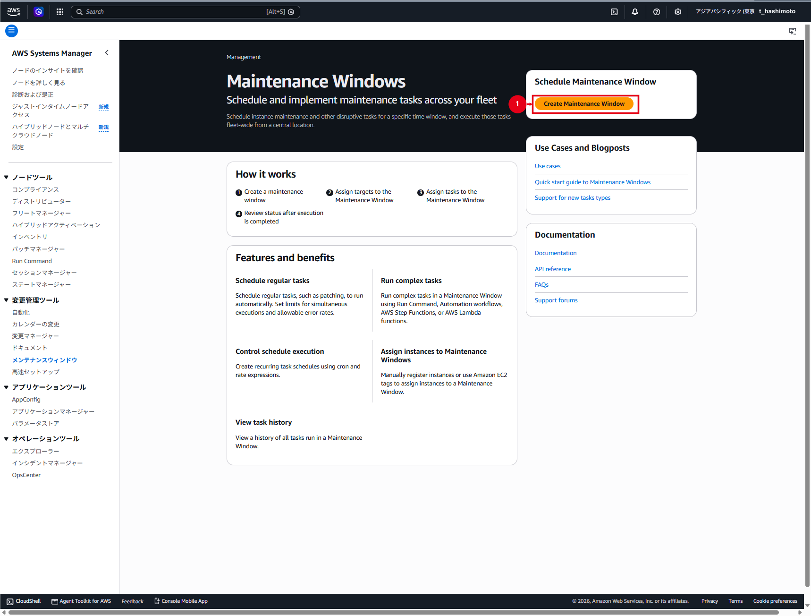
今回の検証値は次のとおりです。
| 項目 | 値 |
|---|---|
| 名前 | Sample-MW-WindowsUpdate |
| スケジュール | cron(0 17 ? * THU#4 *) |
| タイムゾーン | UTC |
| Duration | 1時間 |
| Cutoff | 0時間 |
| 未登録ターゲット | 許可しない |
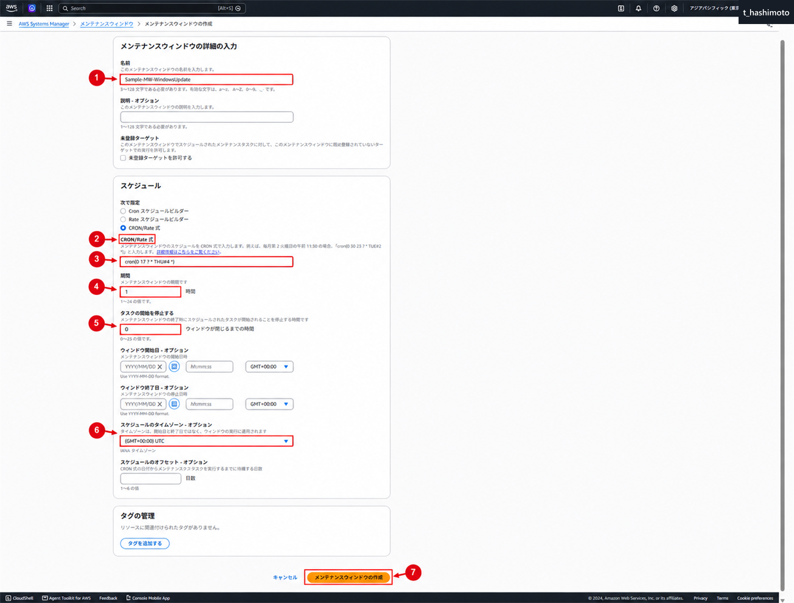
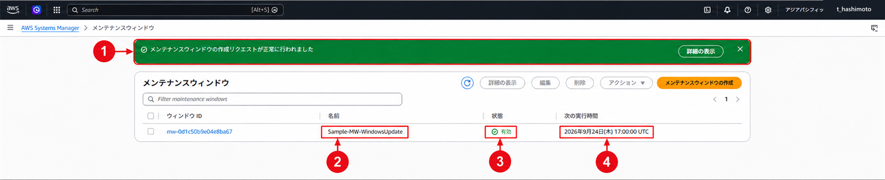
⚠️ 注意：UTCとJST
上記cronは毎月第4木曜17:00 UTC、すなわち日本時間では翌金曜02:00 JSTに実行されます。お客様要件が「第4木曜17:00 JST」の場合はこの設定ではないため、タイムゾーンまたはcronを修正します。
4. Maintenance Windowのターゲットを登録する
- 作成したMaintenance Windowを開き、「ターゲット」タブを選択します。
- 「ターゲットの登録」を選択します。
- ターゲット名へ
PatchingTargetを入力します。 - 「インスタンスタグを指定」を選択します。
- キーへ
Patch Group、値へsample-windowを入力し、「Add」を選択します。 - 「Register target」を選択します。
- ターゲット一覧に
PatchingTargetが表示されることを確認します。
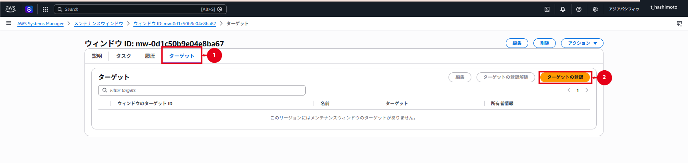
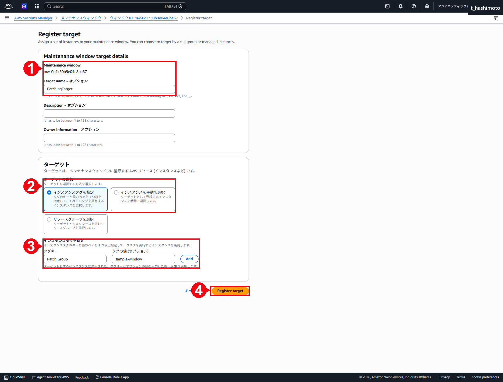
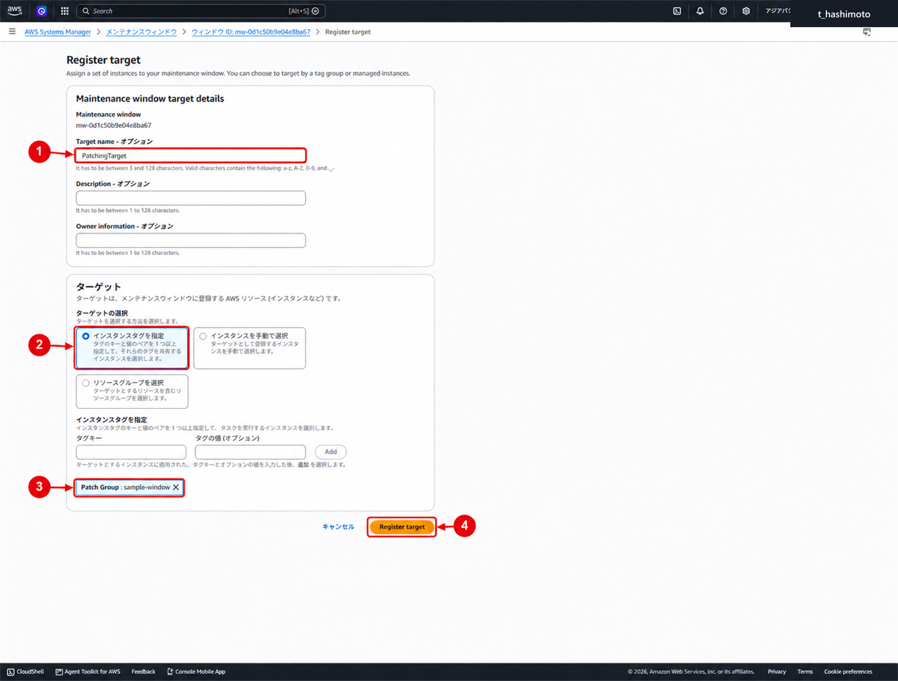
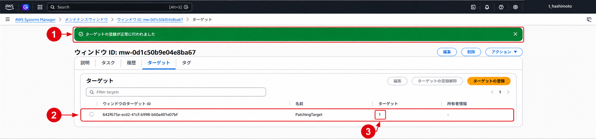
5. EC2へPatch Groupタグを付与する
- EC2コンソールでパイロットインスタンス
Sample-mng-001を選択します。 - 「タグを管理」を開きます。
- キー
Patch Group、値sample-windowを追加します。 - 「保存」を選択します。
- EC2詳細画面でタグが保存済みとなっていることを確認します。
- Maintenance Windowのターゲット条件に一致するEC2がパイロット1台だけとなっていることを確認します。
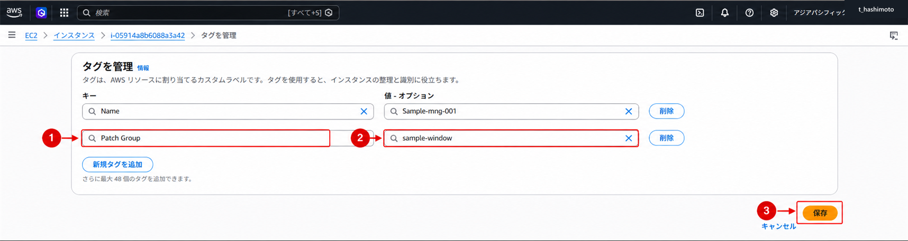
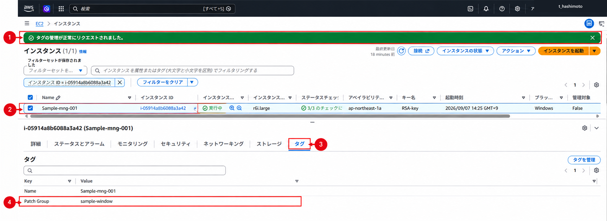
保存完了メッセージと、EC2タグ一覧のPatch Group=sample-windowを確認しました。
6. Run Commandタスクを登録する
- Maintenance Windowの「タスク」タブで「タスクの登録」－「Run Commandタスクの登録」を選択します。
- タスク名を入力します。
- コマンドドキュメント
AWS-RunPatchBaselineを選択します。 - ドキュメントのバージョンは「ランタイムのデフォルトバージョン」を選択します。
- 登録済みターゲット
PatchingTargetを選択します。 - パイロット1台ではConcurrencyを1、Error thresholdを1に設定します。Error thresholdは、エラー数が指定値を超えた時点で、まだ開始していない後続ターゲットへの実行を止める上限です。
1の場合は1件のエラーを許容し、2件目で後続実行を停止します。実行済みタスクは取り消されず、対象が1台だけの場合は停止対象となる後続ノードもありません。 - S3出力を有効化し、承認済みの出力先を指定します。検証例ではバケット名
sample-mw-bucket、プレフィックスpatchmanagerを入力します。 - SNS通知は通知要件がある場合だけ有効化します。
- 初回テストでは
Operation=Scan、RebootOption=NoRebootを設定します。 - Step Timeout Secondsを
10800、コマンドのタイムアウトを600秒に設定して登録します。実作業では承認済みの値を使用します。
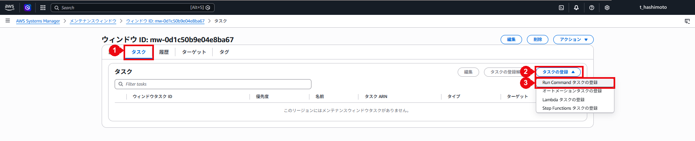
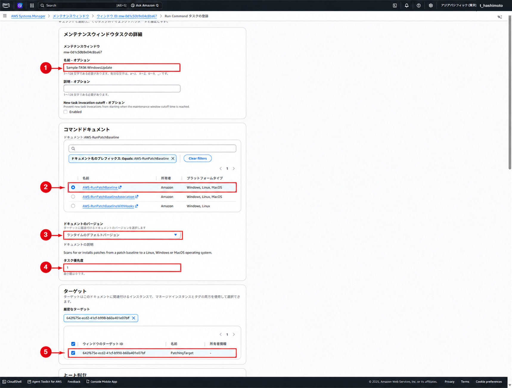
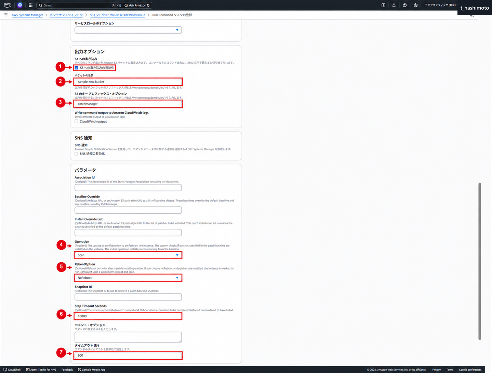
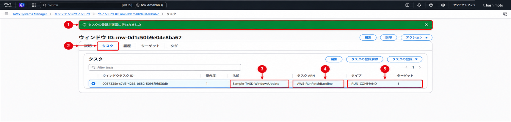
Operation=Scanはコンプライアンスを検出するだけで、更新プログラムをインストールせず、OSも再起動しません。初回テストでは、誤ってInstallを実行することを防ぐため、Operation=ScanとRebootOption=NoRebootの両方を確認します。
7. SNS通知を設定する（任意）
SNSはMaintenance Windowsの必須要素ではありません。今回の設定画面では「SNS通知の有効化」が未選択のため、本手順の必須作業には含めません。
実行失敗、タイムアウトまたは完了をメール等で通知する要件がある場合のみ、次の設定を追加します。
- StandardタイプのSNSトピックを作成します。FIFOトピックは使用しません。
- メール等のサブスクリプションを作成し、受信者が購読確認を行います。
- Systems ManagerがSNSへ通知するためのIAMロールを作成します。
- Maintenance Windowsのサービスロールへ、上記SNSロールに限定した
iam:PassRoleを付与します。 - Run CommandタスクでSNS通知、通知対象イベントおよびCommand／Invocation単位を設定します。
Monitoring Systems Manager status changes using Amazon SNS notifications